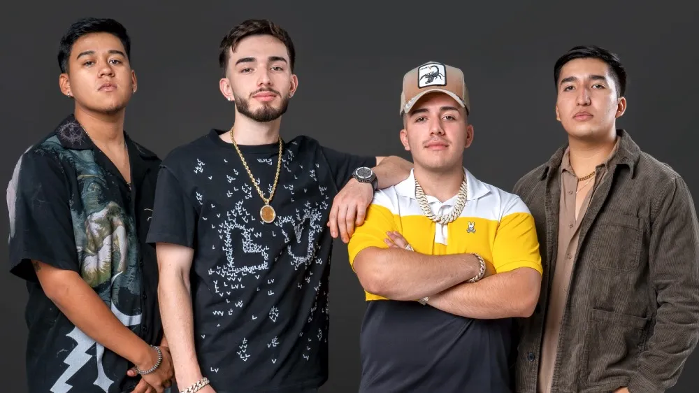
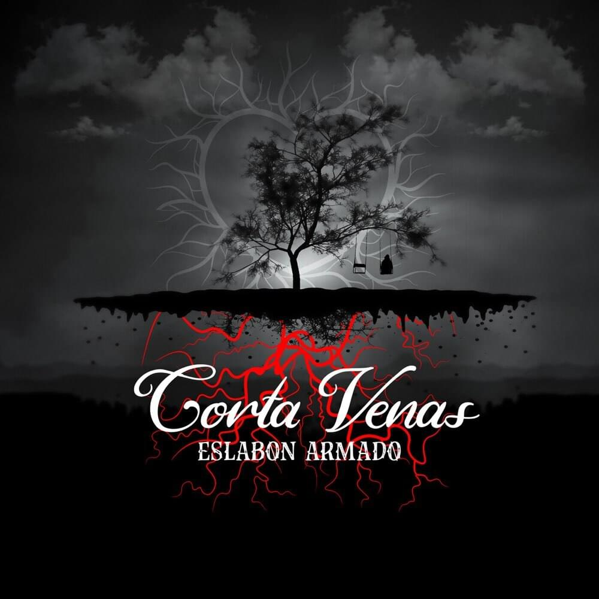
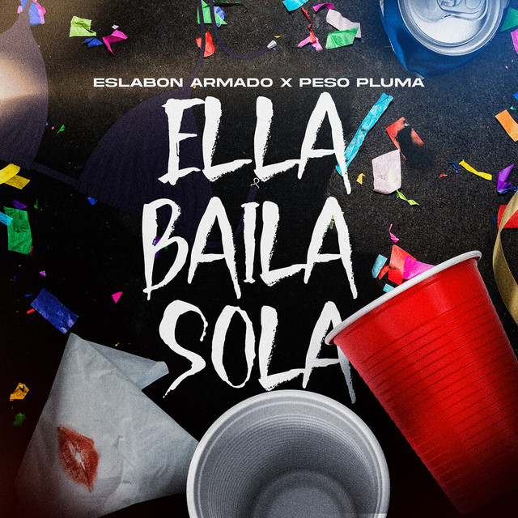

Eslabon Armado

Eslabón Armado es una agrupación mexicano-estadounidense de música regional mexicana
especializada en los subgéneros del sierreño sinaloense y el sierreño urbano.
El grupo está formado desde 2017 por Pedro Tovar, Brian Tovar, Damián Pacheco y Ulises González.
| Album |
Año de lanzamiento |
Canciones |
|
2020 |
Cuenta con 14 cancions |
|  |
2020 |
Cuenta con 24 cancions |
|
2022 |
Cuenta con 14 cancions |
Su mayor exito
Ella baila sola es un sencillo lanzado en colaboracion con Peso Pluma el cual consiguio un gran impacto
en la lista de las billboards consiguiendo estar en el puesto 1 en spotify por mas de 5 meses consecutivos.
